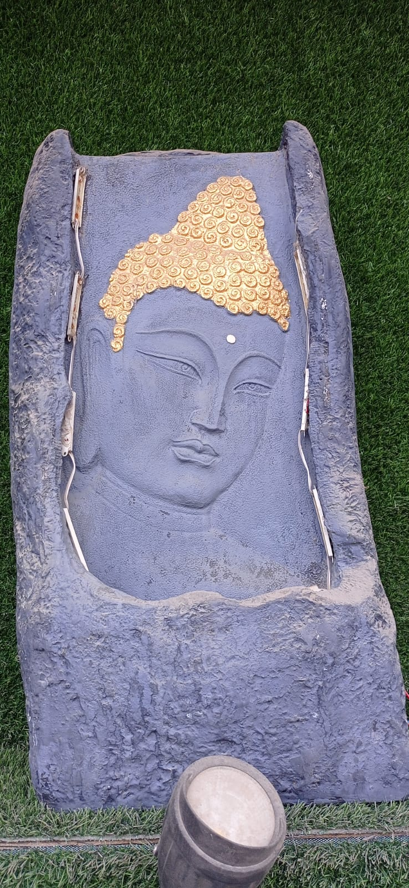

Buddha 101

Once upon a time, a man at age 29 who had everything, more than today's luxury Instagram influencer, he had money, palace, respect, power, a collection of beautiful dancers, women, wine, silk robes, never seen pain. Never heard of death. He was living in a perfectly crafted world, etc.
But he left everything behind with the very same question we struggle and fear with: “What is the purpose of my life, death, happiness, pain, suffering?” But how this all started — to know the answer we have to go to 563 BCE in a place called Lumbini in present-day Nepal.
In the quiet garden of Lumbini, Queen Maya gave birth to a child who would change the world. They named him Siddhartha Gautama. He was a normal child, crying like a baby, playing like a baby, but where he was born was far from ordinary. He took birth in the palace of King Suddhodana of the Sakhya clan.
The astrologers and ascetics predicted that this boy would be either a great king or a great spiritual teacher. Then his father decided that he would become a great king, not some monk who begs for food. He said that he would create a world where Siddhartha would not think about suffering or external spiritual questions. So he built a carefully controlled world — a beautiful illusion. The palace was a golden cage.
His father kept him inside the palace walls, far away from sickness, suffering, or even the sight of an old person. He had everything: the finest clothes, endless music and entertainment, scented gardens, gold-plated halls, food served before he could even ask. He married a beautiful princess named Yasodhara, and they had a son — Rahula.
The Turning Point: The Four Sights
But one day, out of curiosity, he rode outside quietly with his charioteer, Channa. What he saw would change everything — the course of spirituality and rebuild the spiritual pillars:
* An old man – hunched, shaking, toothless. Siddhartha asked, “What happened to him?” Channa replied, “He’s just old. Everyone becomes like this.”
* A sick man – coughing, groaning, helpless. Siddhartha asked, “Can this happen to anyone?” Channa nodded: “Yes. No one escapes illness.”
* A dead body – wrapped, still, cold. Siddhartha froze. “Will I die too?” Channa said nothing. He didn’t need to.
* A wandering monk – calm, barefoot, with nothing but a robe and bowl. He looked peaceful. Not broken, but free.
Siddhartha realized: pleasure couldn’t protect him. The palace couldn’t save him. He too would grow old, fall sick, and die. He wasn't able to sleep that night between gold and silk, confused and terrified by this truth.
The Great Renunciation
This event changed everything. After facing so many terrifying questions, Siddhartha was overwhelmed, confused, and shaken. He was living in a great palace, not in the slippery touch of silk robes, not the taste of wine, not gold, not coins — all felt colorless and none of it mattered anymore.
He had to make a decision between two paths: either he could stay and live a comfortable life in the palace surrounded by safety and pleasure, or he would go to find the truth in exchange for whatever it takes.
He chose the path of uncertainty, the unknown, even at the cost of danger, hunger, and death. He gave up everything for one thing: truth.
But leaving wasn’t easy. He had a wife. A newborn son. A kingdom waiting. He wasn’t just walking away from wealth — he was walking away from love, from duty, from comfort. That night, Siddhartha walked softly through the silent halls of the palace. His wife, Yasodhara, was asleep. His son, Rahula, just born. He didn’t wake them. He didn’t say goodbye. Maybe he knew that if he looked into their eyes, he would never leave.
With the help of his charioteer, Channa, Siddhartha reached the forest edge and took his final step — he removed his royal ornaments, jewels, clothes, and gave them to Channa, wearing normal average human clothes. He cut his long beautiful hair — the symbol of his princely identity — and told Channa to go back and say: “I have renounced the world for the truth.” And here the prince became a seeker. Barefoot. Alone. No map, no money, no power. Only questions in his heart and fire in his mind.
He had everything — and gave it all up for something deeper: truth. This was the beginning of his spiritual journey.